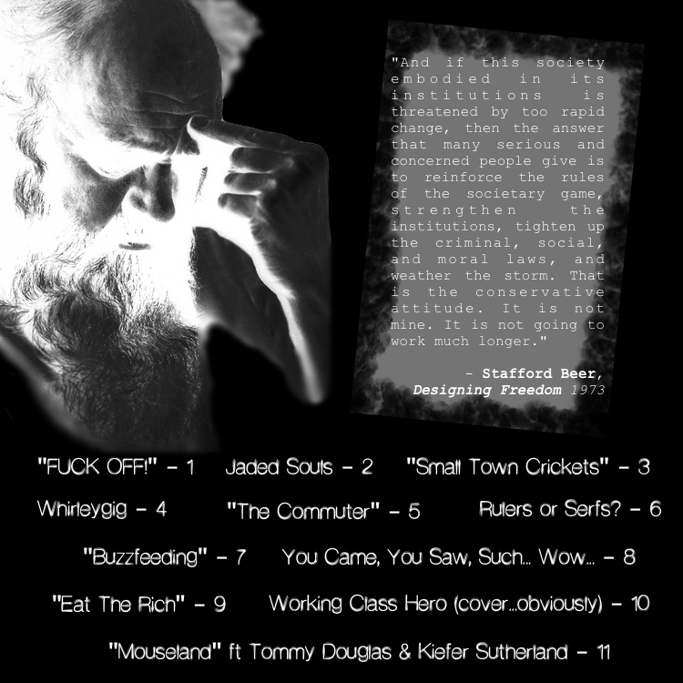

"Collapsed Young" (2016),
a shitty "album" by sgt.groucho
Got Git? Then downloading is as easy as:
git clone https://github.com/proggR/collapsedyoung

Listen Here
- : "FUCK OFF!" (warning: LOUD)
- : Jaded Souls
- : "Small Town Crickets"
- : Whirleygig
- : "The Commuter"
- : Rulers or Serfs?
- : "Buzzfeeding"
- : You Came, You Saw, Such... Wow
- : "Eat The Rich"
- : Working Class Hero (cover)
- : "Mouseland" - Tommy Douglas & Kiefer Sutherland
Share The Poster
New sgt.groucho music coming 2024.
If you want to be a hero, just follow me.